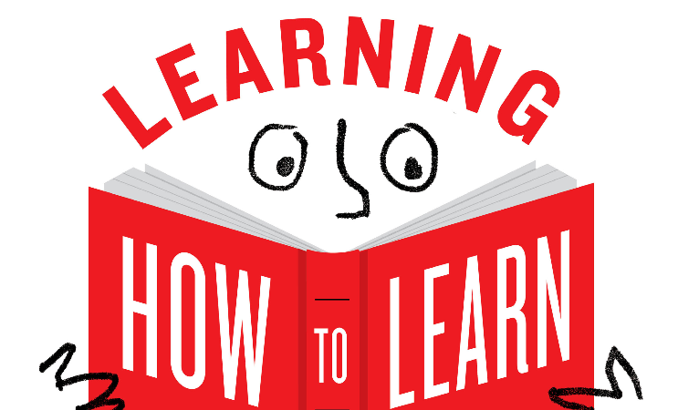

The purpose of this website is to showcase the content of the course in a simple but effective manner. As Barbara and Terry said themselves, to truly understand a subject, you must be able to teach it - so here it goes!
As discussed in the course materials, diffuse mode thinking can be compared to a pinball machine where the pins are loosely spaced and the ball can move freely around the machine. On the other hand, focused mode thinking is like a pinball machine where the pins are closely spaced, making it difficult for the ball to move around freely. Focused thinking is useful when you are trying to learn a new concept and need to concentrate on the task at hand. However, for the most effective learning, you should use both modes of thinking in combination.
The discussed method of "chunking" helps us remember information by categorising
it into groups, or "chunks". This is important because our working memory can
only hold around 4 pieces of information at a time. By chunking information
together, we can combine multiple pieces of information into one larger chunk,
requiring only one working memory slot. This is a huge advantage for learning!
Also analogies and metaphors can be used to relate new information to already
established "chunks" or groups of information.
While attempting to chunk something, it is crucial to remain fully focused on the
information without any distractions. External factors like television, radio,
or people talking in the background occupy the working memory slots that should
be used to concentrate on the task at hand.
The next important step is that you really understand the basic idea of a concept
you are trying to learn, for example, if you have to keep on going back to the
material to understand what is going on you will not be able to “chunk” the whole
big picture context of the idea.
It's important to grasp the big picture when learning something new. This will
help you connect all the pieces together. Imagine it like a puzzle, with your
smaller chunks forming the middle pieces. By understanding the larger picture,
you can better comprehend where the missing pieces fit in. A great way of getting
this context is by skimming the content you're studying. You can read the headings
or even take a "picture walk" through the textbook.